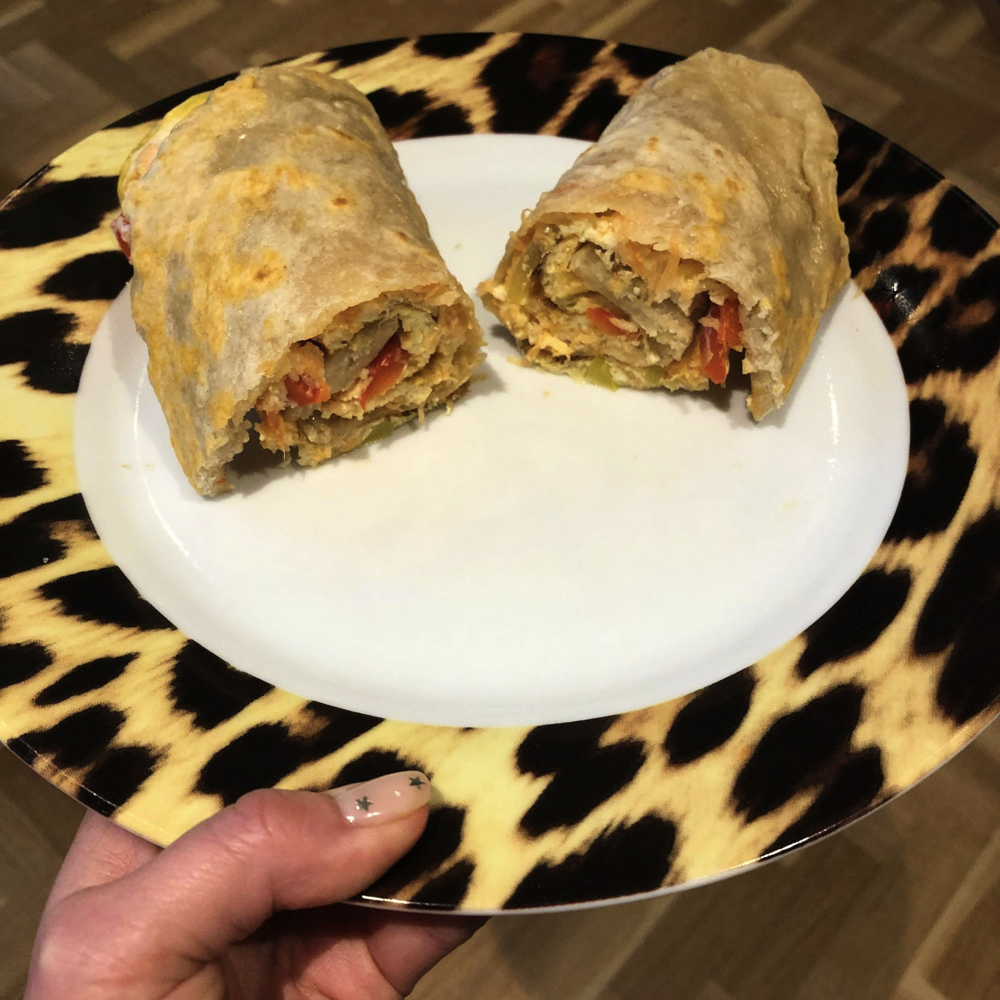

Rolex Recipe

Description
In Uganda, the term "Rolex" refers to a popular street food dish rather than the luxury watch brand. A Rolex in Uganda is a type of chapati (flatbread) wrap filled with a combination of scrambled eggs, vegetables, and sometimes meat.
The name "Rolex" is a play on words and is derived from the phrase "rolled eggs." The dish gained popularity in Uganda, particularly in the capital city of Kampala, and has become a common and affordable street food option.
To make a traditional Ugandan Rolex, a chapati is cooked and then a mixture of beaten eggs, onions, tomatoes, and sometimes cabbage or other vegetables is spread over the chapati. The mixture is then rolled up tightly, creating a flavorful and satisfying handheld meal.
The Rolex has gained a reputation as a convenient and tasty street food that can be enjoyed as a quick breakfast, lunch, or snack. It is often sold by street vendors or small food stalls in various parts of Uganda, and it has become an integral part of the local culinary scene.
Ingredients
- Chapati (flatbread)
- 2-3 eggs
- 1 small onion, finely chopped
- 1 small tomato, finely chopped
- 1/4 cup cabbage, shredded (optional)
- Salt and pepper to taste
- Oil or butter for cooking
Steps
- Heat a frying pan or skillet over medium heat.
- In a bowl, beat the eggs and season with salt and pepper.
- Add a small amount of oil or butter to the pan, ensuring it coats the surface.
- Pour the beaten eggs into the pan and scramble them, stirring occasionally until fully cooked. Set aside.
- Place a chapati on a clean surface or plate.
- Spread the scrambled eggs evenly on the chapati, leaving some space around the edges.
- Sprinkle the chopped onions, tomatoes, and shredded cabbage (if using) over the eggs.
- Starting from one end, roll the chapati tightly, encasing the filling inside.
- Wrap the rolled chapati in foil or parchment paper to secure it and keep it warm.
- Repeat the process for the remaining chapatis and filling.
- Allow the filled chapatis to rest for a few minutes to let the flavors meld together.
- Unwrap the foil or parchment paper and slice the Rolex into smaller pieces, if desired.
- Serve the Ugandan Rolex as a handheld snack or with a side of ketchup or hot sauce.